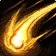
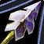
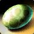
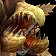

星界转移
90 秒（位面旅行者）· 持续 12 秒
所有伤害 −40%。全本唯一主动大减伤，按路线固定高压点预留，两个必留点间隔不足 90 秒时保后一个。
夺目谷以高频神圣与自然法伤和密集读条为主。元素萨满没有免疫，靠 90 秒星界转移锁住六个固定高压点：开场喷涌之花、伊库兹疯乱叠咆哮、鲁伊亚光明之火与峡谷之灵、主母无清毒轮喷毒、兹欧凯特多层吃球；清毒图腾管住主母一整轮全团喷毒，土元素（3 分钟）跨段补空档，风剪盯紧五个必断读条顺带续风幕减伤。
四张手牌管住全本，外加两条铁律和五个必断读条。
所有伤害 −40%。全本唯一主动大减伤，按路线固定高压点预留，两个必留点间隔不足 90 秒时保后一个。
配始源羁绊不再嘲讽，改为最大生命值 +15%。冷却长，跨段算好 180 秒间隔，只补星界空档。
插下当刻及随后每 1.5 秒为 30 码内一名队友清掉所有中毒；专门用来化解主母全团喷毒，不能清魔法或非中毒自然伤。
打断后 12 秒受法术伤害 −15%（物理践踏、流血与痛击吃不到）。盯紧下方五个必断读条。
一场 +24 限时实录（展示真实冷却节奏，非每波强制照搬；具体取舍见下方路线）。
看到什么 → 按什么 → 为什么。带「必做」标签的高亮行是每把必做的关键动作。伤害数字是 +24 实测（含被吸收的部分），层数越高越大。




取自 +24 限时录像的元素天赋，英雄天赋先知。复制字符串，在游戏天赋界面点「导入」。
CYQAAAAAAAAAAAAAAAAAAAAAAAAAAAzMbbzMGjZZbZMmhZAAAAgFzsBDYAzGTgZBAmlZmZMWWMtxMjZWmZmZMsYZmZZYMzsAAMAwMjhhB
这四个防御与功能天赋不要动
常见可换：幽魂步（可秒解伊库兹血棘之根定身）↔ 阵风；大地之盾、元素环绕、塞拉赞恩的韧性、治疗链 ↔ 静电充能、图腾集中、图腾潮涌（按队伍分工另可调整雷霆之爪、妖术、陷地图腾、喷流）；另常驻配有自然守护者、元素防护、生机盎然、恩赐之魂、电能图腾、狂风图腾。